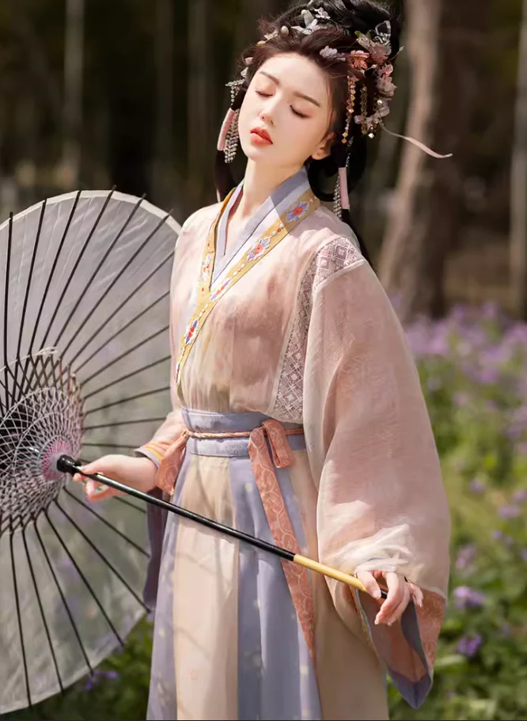
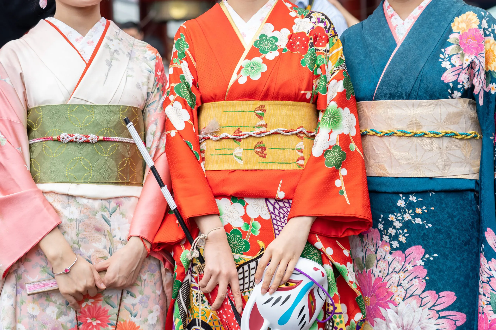

服饰文化
探寻中日传统服饰的历史演变与文化内涵
历史沿革
中国传统服饰源远流长，从先秦服饰到汉服，再到明清时期的演变，体现了不同历史阶段的审美与礼仪；日本和服的发展也同样有着丰富的历史背景，受中原文化的影响不断演进。
先秦
原始服饰，简朴实用
汉代
汉服兴起，礼仪体系完善
主要服饰展示

中国：汉服
汉服讲究对称美、色彩搭配与礼仪规范，是中华文化的重要载体。

日本：和服
和服注重层次感与细节设计，常用于传统节庆与特殊仪式。
文化解读
服饰不仅是日常穿着，更承载着历史、礼仪和美学。中日传统服饰各有千秋，中国的汉服注重传统礼仪与精神内涵；日本的和服则表现出对自然与季节变化的敏锐捕捉。
互动体验
参与问卷、投票或小测试，了解你对传统服饰的了解程度。